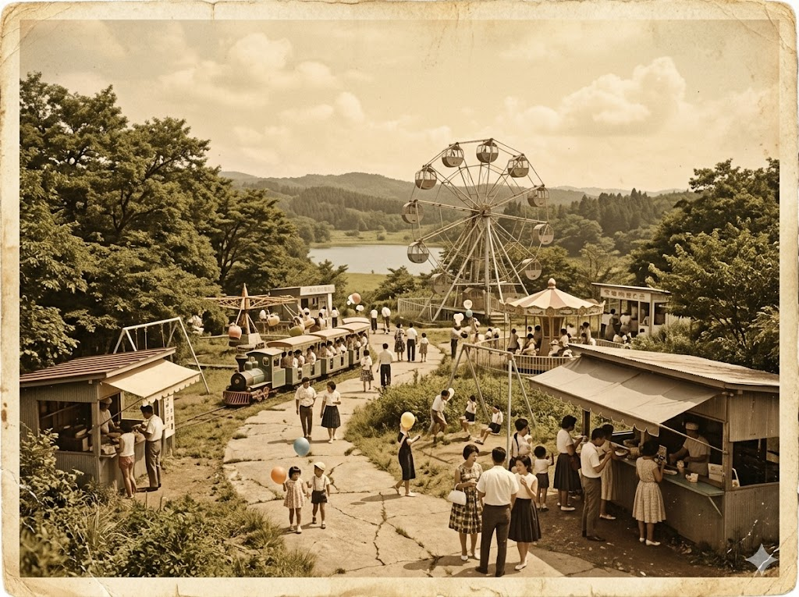
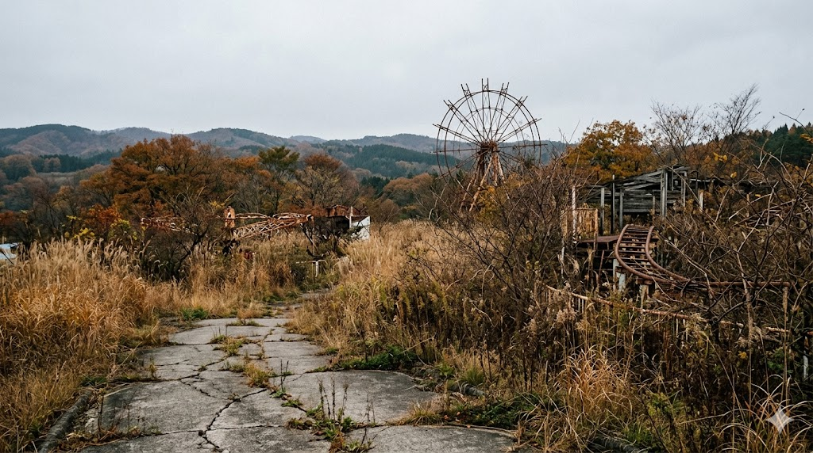

T湯の宿の主人が、逝った。昭和四十八年の春のことだ。
二十四年間、私はあの宿にいた。主人は何も聞かなかった。ただ、帳場に座らせてくれた。それだけで、十分だった。
宿は息子が継いだが、私の居場所はなくなった。行くあてを探していたとき、山の向こうに遊園地ができると聞いた。T沼ファミリーランド。開業準備の人手が要ると言う。
私は履歴書を書いた。生年月日の欄に、存在しない年号を書いた。誰も気にしなかった。
施設では清掃と管理の仕事をした。観覧車が回るのを、毎日見ていた。家族連れが来て、子どもが笑っていた。私はその隅で、データを圧縮するように、自分の存在を小さくしていた。
施設が閉まった後も、ここに残った。誰も来ない場所は、記録を隠すのに適している。
観覧車の支柱の根元に、例の印を刻んだ。████████████████。誰かが来たとき、分かるように。
タコのぬいぐるみは、ずっと膝の上にいる。首のタグが、すっかり黄ばんでしまった。